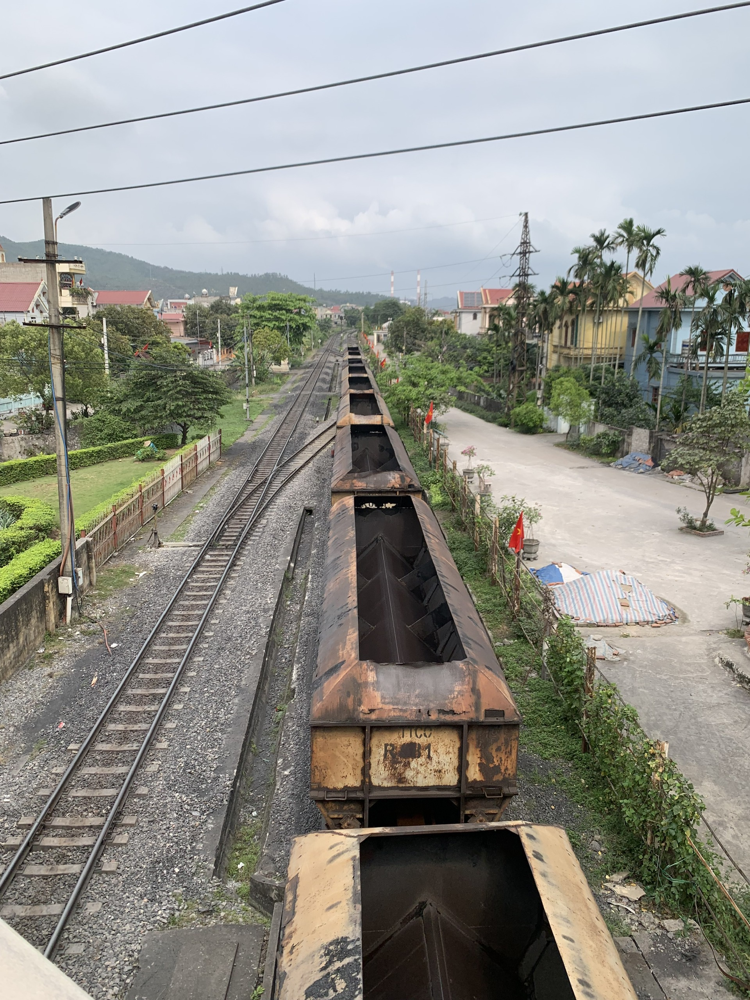

Economy
One of Vietnam's coal mining centers, and its economy is heavily based on coal extraction and processing.

One of my greatest achievements so far has been graduating from Swinburne University. This accomplishment reflects my dedication, hard work, and commitment to my education and personal growth.
I am proud to be an alumnus of Swinburne University and look forward to using the skills I gained there to make a positive impact in the world.
Cam Pha is located in Quang Ninh Province, in northeastern Vietnam. It is near Ha Long Bay and is known for its rugged terrain, mountains, and coastal areas.
One of Vietnam's coal mining centers, and its economy is heavily based on coal extraction and processing.
Cam Pha is located in Quang Ninh Province, in northeastern Vietnam. It is near Ha Long Bay and is known for its rugged terrain, mountains, and coastal areas.
Cam Pha is located in Quang Ninh Province, in northeastern Vietnam. It is near Ha Long Bay and is known for its rugged terrain, mountains, and coastal areas.